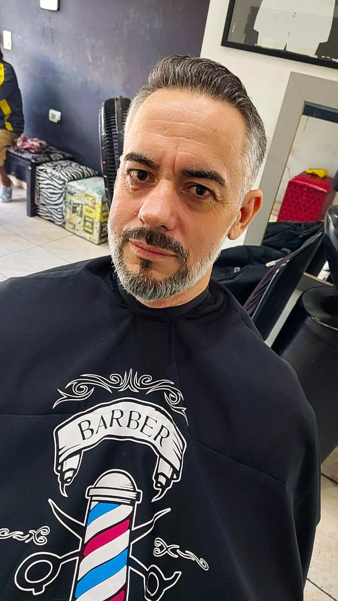
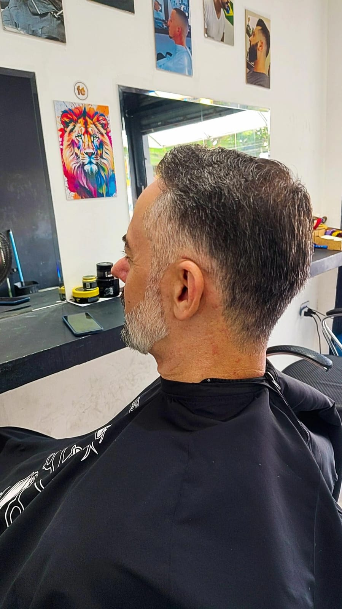

Sobre nós
Das raízes do Maranhão aos sonhos em São Paulo
A história de uma cabeleireira determinada
Nascida em uma pequena cidade do interior do Maranhão, Maria das Dores — conhecida por todos como Dryka — sempre teve mãos habilidosas e um olhar atento para a beleza. Desde muito jovem, ainda ajudando as vizinhas com tranças e cortes improvisados no quintal de casa, ela sonhava com algo maior. Sonhava em transformar vidas através da autoestima, e em construir um futuro com as próprias mãos.
Com poucos recursos, mas uma coragem imensa, Dryka decidiu deixar sua terra natal e enfrentar a imensidão de São Paulo. A chegada não foi fácil: a saudade da família, o frio desconhecido, o ritmo apressado da cidade grande. Mas ela não se deixou abater.
Trabalhou como assistente em salões de bairro, estudou à noite e se aperfeiçoou. Aos poucos, conquistou seu espaço e fidelizou uma clientela que não vinha apenas pelo talento, mas pela forma como ela acolhia cada pessoa que sentava em sua cadeira. Seu estúdio, hoje conhecido como Studio DRYKA SPINDOLA, é mais do que um salão de beleza: é um lugar de transformação, de escuta e de empoderamento.
A trajetória de Dryka é exemplo de força, persistência e fé. Ela mostra que com coragem e trabalho, uma mulher nordestina pode vencer todas as barreiras e brilhar onde quiser — inclusive na maior cidade do Brasil.
Serviços e Preços
| Serviço | Preço |
|---|---|
| Corte Masculino (1ª vez) | R$ 50,00 |
| Corte Masculino (manutenção) | R$ 40,00 |
| Corte Infantil Masculino | R$ 40,00 |
Galeria


Informações de Contato
Telefone: (11) 98106-6110
Horário de Funcionamento:
- Terça a Sexta: 12:00 às 20:00
- Sábado: 09:00 às 16:00
Falar com: Dryka